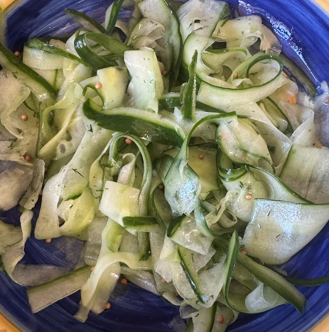

Cucumber Pickle

Serves: 4
Cook Time: 15 min
From BBC good food
Ingredients
- 1 cucumber
- Dressing
- 1 tbsp white wine vinegar
- 1 tbsp caster sugar
- 1 tsp sea salt
- ½ tsp coriander seeds
- ½ tsp chopped dill
Method
Using a potato peeler, slice up the cucumber into thin strips. Discard the seed core. Dab with kitchen paper to dry a bit.
Whisk together the dressing ingredients and pour over the cucumber. Leave to pickle for 15-30 min.